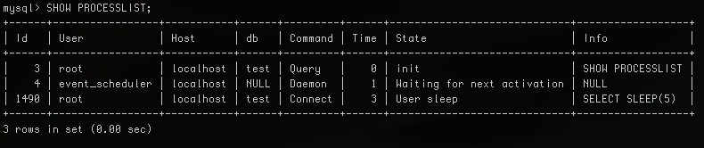

Eventos y bloqueo exclusivo en MySQL
31/03/2015Puede pasar que la ejecución de un procedimiento almacenado tarde más tiempo de lo previsto, y como hay un evento que lo ejecuta cada X tiempo, estos empiezan a verse amontonados en la lista de procesos, como podemos imaginar es muy malo. Afortunadamente MySQL tiene unas funciones que nos permite hacer un bloqueo exclusivo, así garantizamos que se ejecute solo uno a la vez.
En el siguiente ejemplo, tenemos un evento que se ejecuta cada 1 segundo y llama a un procedimiento almacenado que tarda 5 segundos en ejecutarse. Lo ideal de este caso, es que podremos observar en la lista de procesos 5 eventos ejecutando al mismo tiempo.
DELIMITER |
CREATE PROCEDURE sp_wait()
BEGIN
SELECT SLEEP(5);
END|
DELIMITER ;
DROP EVENT IF EXISTS ev_wait;
DELIMITER |
CREATE EVENT ev_wait ON SCHEDULE EVERY 1 SECOND DO
BEGIN
CALL sp_wait();
END|
DELIMITER ;
Una vez creado el procedimiento almacenado y el evento, ya podremos observar como se amontonan en la lista de procesos usando el comando “SHOW PROCESSLIST;”:

La solución es muy simple, vamos a implementar dos funciones; GET_LOCK y RELEASE_LOCK para hacer el bloqueo exclusivo, en el ejemplo siguiente podemos ver como lo implementamos:
DROP EVENT IF EXISTS ev_wait;
DELIMITER |
CREATE EVENT ev_wait ON SCHEDULE EVERY 1 SECOND DO
BEGIN
SELECT GET_LOCK('temp.sp_wait', 0) INTO @got_lock;
IF @got_lock = 1 THEN
CALL sp_wait();
SELECT RELEASE_LOCK('temp.sp_wait');
END IF;
END|
DELIMITER ;
Ahora podremos observar en la lista de procesos que siempre hay un único proceso en ejecución y no 5 como antes:
